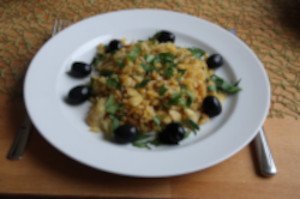

Receita de Bacalhau à Brás

Receita:
Carasterísticas da receita
Dificuldade
Custo
Tempo
Doses
Fácil
Baixo
40 minutos
4 pessoas
Ingredientes:
400g de batata palha
6 ovos
500g de bacalhau desfiado
2 cebolas
3 dentes de alho
Salsa q.b
1 dl
0,5 dl de azeite
Sal e pimenta q.b
Azeitonas q.b
Modo de preparação:
Demolhe o bacalhau de um dia para o outro.
Descasque e lave as cebolas e corte as cebolas em meias luas finas.
Descasque e lave os dentes de alho e pique-os finamente.
Bata os ovos com leite.
Num tacho aqueça o azeite, junte as cebolas e os dentes de alho.
Deixe refogar até que fique douradinho.
Junte depois o bacalhau e deixe a cozinhar mais um pouco até que fique com aspeto de cozinhado.
Junte depis as batatas, envolta e regue com os ovos.
Deixe cozinhar,mexendo sempre.
Retire do lume e retifique os temperos.
Polvilhe com salsa picada e as azeitonas.
Decore a gosto e sirva.
Numa escala de 1 a 10 como avalia esta receita?
Gostou desta receita? Deixe o seu Email para receber a nossa newsletter.
Introduza o seu email: